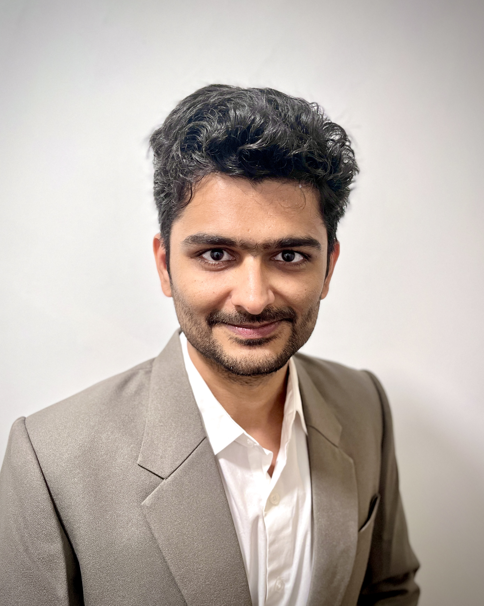

About Me

I will be joining the Department of Mechanical Engineering and the School of Energy Resources at the University of Wyoming as an Assistant Professor in Fall 2026. My research focuses on computational materials science. I have authored over 25 publications in leading journals, including Nature Communications, Acta Materialia, Advanced Materials, and Carbon, with an emphasis on advancing materials research to address global challenges. I am deeply committed to teaching and mentoring, and I value scientific discussions that foster curiosity and critical thinking. My work is highly collaborative, involving partnerships with institutions such as NASA Ames and Ames National Laboratory, among others. I also have a strong interest in coding, which plays a central role in my research, and I enjoy cooking as a creative outlet. In many ways, my approach to science is inspired by materials themselves, finding balance between order and complexity.
✨ What Do I Do
- ab initio Calculations
- Machine Learning
- Phonon Transport and Lattice Dynamics
- High-Throughput DFT Methods
- Method and Theory Development
Work Experience
-
Postdoctoral Fellow
Hopkins Extreme Materials Institute, Johns Hopkins University, Baltimore, MD, USA (October 2024 - Present)
-
Visiting Scientist
Ames National Laboratory, Ames, IA, USA (September 2023 - September 2024)
-
Materials Scientist/Engineer
AMA, Inc., Thermal Protection Materials Branch, NASA Ames Research Center, Moffett Field, CA, USA (June 6, 2022 - August 15, 2022)
Educational Background
-
Ph.D. in Mechanical Engineering and Mechanics
Lehigh University, Bethlehem, PA, USA (August 2021 - July 2024)
Dissertation: Additives in Solid-Solutions: Understanding Structural Properties of Alloys From Electron & Phonon Dynamics
Advisor: Prof. Ganesh Balasubramanian
Focused on density functional theory and lattice dynamics with experimental validation to optimize solid solution strengthning in Refractory alloys for NASA's space mission. -
Master’s in Materials Science
Indian Institute of Technology Hyderabad, Kandi, India (2018 - 2020)
Developed expertise in high entropy alloys and thermal barrier materials. -
Bachelor’s in Mechanical Engineering
SGSITS Indore, India (2014 - 2028)